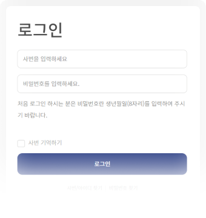
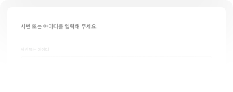

이용 가이드
Title
일반 회원 로그인 하기
아이디/비밀번호 입력
회원 가입 시 등록한 아이디 비밀번호를 입력 시 로그인 버튼이 활성화 됩니다.
활성화 된 버튼을 선택하면 회원님의 아이디로 로그인 되며 KMI 서비스를 원활히 이용 가능합니다.
아이디 저장
아이디 저장 항목 선택 시 체크박스가 활성화 되며 다음에 로그인할 시 아이디가 저장된 상태로 노출됩니다.
사번으로 로그인 하기(최초 로그인)
-
STEP 1. 사번 / 비밀번호 입력
임직원 분의 사번과 생년월일을 입력 후 로그인 가능합니다.

로그인 버튼을 클릭 하시면 다음 절차로 이동 합니다. -
STEP 2. 첫 방문 임직원 로그인
첫 방문 회원이 처음 로그인을 시도할 경우에는 약관동의 절차를 진행 하셔야 합니다.
필수 약관 동의 후 본인 인증하기 버튼을 선택 하면 다음 절차로 이동 합니다. -
STEP 3. 본인 인증
선택에서 인증을 원하시는 방법을 선택하시고, 인증받기 버튼을 눌러 인증을 진행해 주세요.
-
STEP4. 비밀번호 재설정
새 비밀번호를 입력 후 새 비밀번호 확인을 입력해 주세요.
-
STEP5. 개인정보 입력
본인의 개인 정보를 입력 후 KMI 서비스를 이용하실 수 있습니다.
아이디로 로그인하기(최초 로그인)
-
STEP1. 아이디 / 비밀번호 입력
아이디에 임직원 분의 휴대폰 번호와 비밀번호에 생년월일을 입력 후 로그인 가능합니다.
로그인 버튼을 클릭 하시면 다음 절차로 이동 합니다. -
STEP 2. 첫 방문 임직원 로그인
첫 방문 회원이 처음 로그인을 시도할 경우에는 약관동의 절차를 진행 하셔야 합니다.
필수 약관 동의 후 본인 인증하기 버튼을 선택 하면 다음 절차로 이동 합니다. -
STEP 3. 본인 인증
선택에서 인증을 원하시는 방법을 선택하시고, 인증받기 버튼을 눌러 인증을 진행해 주세요.
-
STEP4. 아이디 및 비밀번호 재설정
아이디와 새 비밀번호를 입력 후 새 비밀번호 확인을 입력해 주세요.
-
STEP5. 개인정보 입력
본인의 개인 정보를 입력 후 KMI 서비스를 이용하실 수 있습니다.
휴대폰 번호로 아이디 찾기
휴대폰 번호로 찾기 선택
등록된 휴대폰 번호로 찾기를 선택합니다.
내 정보 입력
이름, 휴대폰 번호, 인증번호를 입력 후 아이디 찾기를 시도해 보세요.
인증번호는 입력한 휴대폰 번호로 전송된 메시지에서 확인 가능합니다.
아이디 찾기 완료
내 정보 입력 화면에서 입력된 정보가 올바를 경우 회원님의 아이디 찾기 완료 화면으로 이동합니다.
아이디 찾기 완료 후 로그인을 하려면 로그인 버튼을 비밀번호 찾기를 원하시면 비밀번호 찾기 버튼을 선택하여 이동하세요.
이메일로 아이디 찾기
등록된 이메일로 찾기 선택
등록된 이메일로 찾기를 선택합니다.
내 정보 입력
이름, 이메일, 인증번호를 입력 후 아이디 찾기를 시도해 보세요.
인증번호는 입력한 이메일 주소로 전송된 메시지에서 확인 가능합니다.
아이디 찾기 완료
내 정보 입력 화면에서 입력된 정보가 올바를 경우 회원님의 아이디 찾기 완료 화면으로 이동합니다.
아이디 찾기 완료 후 로그인을 하려면 로그인 버튼을 비밀번호 찾기를 원하시면 비밀번호 찾기 버튼을 선택하여 이동하세요.

비밀번호 찾기
사번 또는 아이디 입력
사번 또는 아이디를 입력 후 비밀번호 찾기가 가능합니다.
휴대폰 본인인증으로 찾기
이름, 휴대폰 번호, 인증번호를 입력 후 비밀번호 찾기를 시도해 보세요.
인증번호는 입력한 휴대폰 번호로 전송된 메시지에서 확인 가능합니다.
비밀번호 재 설정
휴대폰 인증이 완료되었을 경우 회원님의 비밀번호 재설정 화면으로 이동합니다.
비밀번호는 영문, 숫자, 특수문자 중 2개 이상 조합 최소 8자~12자 이내로 설정이 가능하며 비밀번호 설정이 완료되면 로그인 화면으로 이동 후
로그인을 시도해 보세요
메인
좌측 메뉴 영역
내 정보 관리 화면이나 인증센터 메뉴로 이동이 가능합니다.
로그인 후 상태에서는 사업장 로고, 건강검진 제도, 검진예약/결과조회, 결과상담, 건강정보, 커뮤니티 메뉴를 확인할 수 있으며 전체 서비스 이용이
가능합니다.
배너 영역
KMI에서 다양한 이벤트 및 중요 공지사항을 확인할 수 있습니다.
로그인 상태에서는 배너 영역은 제한 없이 전체 이벤트 및 공지사항을 확인할 수 있습니다.
검진 대상자
회사지원으로 등록된 대상자를 확인 하실 수 있습니다.
대상자를 선택하여 예약 하실 수 있습니다.
검진 결과
본인이나 가족의 검진 완료된 결과를 한눈에 확인 하실 수 있습니다.
하단 영역
KMI에서 이용 가능한 서비스 메뉴 항목들, 회사 정보를 확인할 수 있습니다.
개인정보처리방침, 이용약관, 이용 가이드 항목을 이용할 수 있습니다.

검진 대상자
검진 대상자 선택
검진 대상자 페이지에서 ‘나’의 대상자카드를 확인할 수 있습니다.
정해진 예약기간 내에 검진을 예약해 주세요.

가족검진 신청 대상자 추가
기업고객인 중 가족지원 대상자인 경우 대상자의 정보를 입력 하여 대상자를 추가 할 수 있습니다.
정해진 예약기간 내에 검진을 예약해 주세요.
검진예약
-
STEP 1. 검진기관 선택
원하는 검진기관을 선택해 주세요.
-
STEP 2. 검진상품 선택
STEP 1에서 선택한 검진기관의 정보와 진행하는 검진상품을 확인할 수 있습니다.
원하는 검진상품을 선택해 주세요. [상품 비교하기] 버튼을 누르면 검진상품을 한눈에 비교할 수 있습니다. -
STEP 3. 선택검사 선택
STEP 2에서 선택한 패키지에 속해있는 기본검사와 선택검사항목을 확인할 수 있습니다.
원하는 검사항목을 선택해 주세요. -
STEP 4. 추가검사 선택
STEP 3과 동일하게 원하시는 검사를 추가적으로 선택할 수 있습니다.
원하는 추가 검사항목을 선택해 주세요.
-
STEP 5. 검진일자 선택
검진 가능한 날짜를 확인할 수 있습니다.
검진을 원하는 날짜를 1차, 2차 모두 선택해 주세요 -
STEP 6. 검진자 정보 입력
검진 예약 시 필요한 필수 정보와 약관 동의입니다.
필수 정보와 약관에 동의해 주세요. -
STEP 7. 신청 완료
STEP 3과 동일하게 원하시는 검사를 추가적으로 선택할 수 있습니다.
원하는 추가 검사항목을 선택해 주세요.
-
STEP 8. 예약신청 완료
예약 신청이 완료 되었으며, 검진센터에서 확인 후 검진일을 확정하여 안내드립니다.
검진 결과 확인
검진 이력
그동안 내가 받았던 검진 이력를 모아서 관리하고 언제든지 필요할 때 확인하고 수치 변화를 확인 수 있어요.
검진 결과
등록된 검진결과를 내가 필요할 때 언제든지 확인할 수 있어요.
결과 비교 (텍스트)
최근 검진 결과를 최대 3회차까지 비교하실 수 있습니다.
결과 결과 비교 (숫자)
최근 검진 결과를 최대 3회차까지 비교하실 수 있습니다.
검진기관
검진기관 리스트
원하시는 지역의 검진센터를 보여드립니다.
검진기관 상세
검진센터 안내, 의료인력 안내, 의료장비 안내 3가지의 탭으로 다양한 항목을 검색 할 수 있습니다.
서비스 문의
서비스 문의 목록
내가 질문한 내용과 담당자의 답변 여부를 확인할 수 있습니다.
상단의 문의하기 버튼을 선택하시면 문의하기를 이용하실 수 있습니다.
서비스 문의하기
상담 유형을 선택 후 대상자 정보와 내용을 입력 하여 등록하기 버튼을 통해 문의글을 작성 하실 수 있습니다.
서비스 문의하기는 관계 법령에 의해 개인정보 및 민감정보 수집 및 이용에 동의해야 등록이 가능합니다.
공지사항
공지사항 목록
공지 사항은 최신순으로 노출됩니다.
공지사항을 선택하시면 상세 화면으로 이동해 자세한 내용을 확인 하실 수 있습니다.
공지사항 상세
공지 상세 내용을 확인 하실 수 있습니다.
목록으로 이동하시려 면 목록으로 버튼을 선택해 주세요.
자주 찾는 질문 (FAQ)
이런 질문을 찾으시나요?
가장 많이 찾은 질문 10가지를 보고 회원님에게 도움이 될 질문들을 확인 하세요.
목록을 선택하면 하단의 답변 내용이 확인 가능합니다.